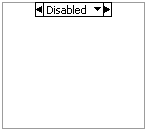

Diagram Disable Structure
Owning Palette: Structures
Requires: Base Development System
Has one or more subdiagrams, or cases, of which only the Enabled subdiagram executes. Use the Diagram Disable structure to disable a section of the block diagram.

 Add to the block diagram Add to the block diagram |
 Find on the palette Find on the palette |
Place a Diagram Disable structure around the code you want to disable. In the Enabled subdiagram, include any code that you want to enable in place of the code in the Disabled subdiagram.
After you create a Diagram Disable structure, you can add, duplicate, rearrange, or delete the subdiagrams. To scroll through the available subdiagrams, click the decrement and increment arrows in the selector label. You also can remove the structure without deleting objects in the structure.
The Diagram Disable structure allows you to disable a section of a block diagram. To disable specific sections of code on the block diagram based on some user-defined condition, use the Conditional Disable structure. To disable specific sections of code on the block diagram based on compilation results, use the Type Specialization structure.
To switch to a Conditional Disable or Type Specialization structure, right-click the border of the Diagram Disable structure and select Replace with Conditional Disable Structure or Replace with Type Specialization Structurefrom the shortcut menu.
Example
Refer to the Diagram Disable Structure VI in the labview\examples\Structures\Disable Structures directory for an example of using the Diagram Disable Structure.
 Open example Find related examples
Open example Find related examples